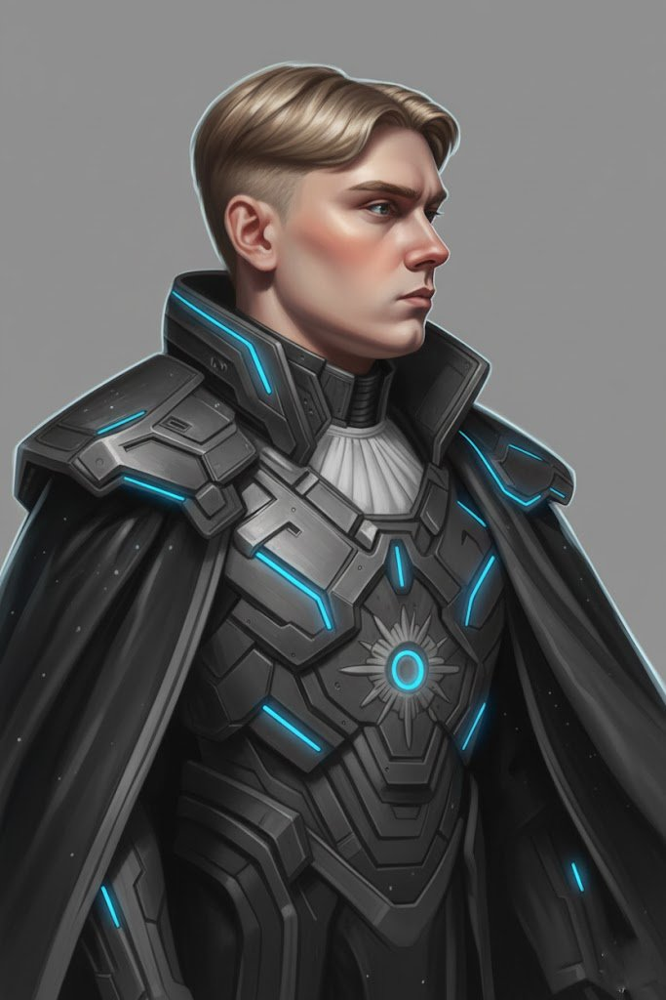
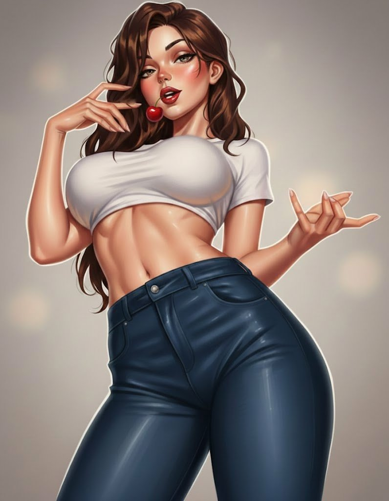
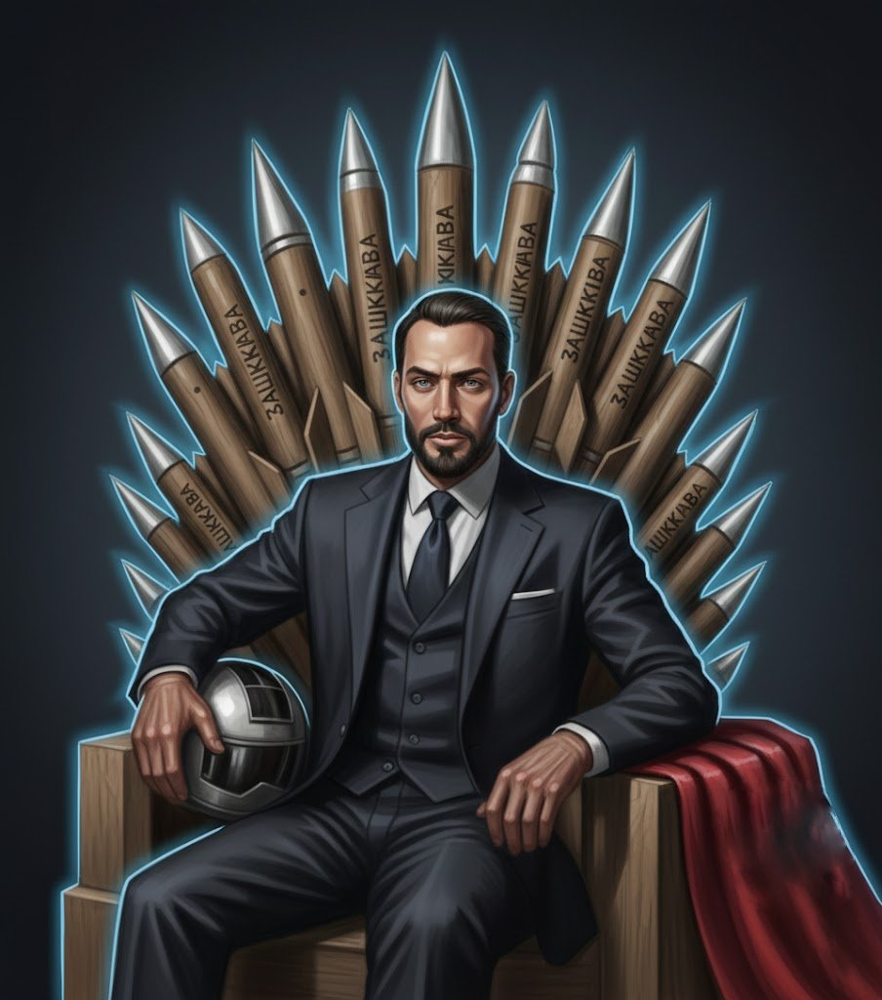
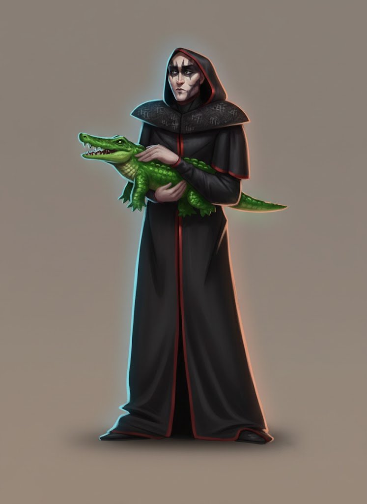
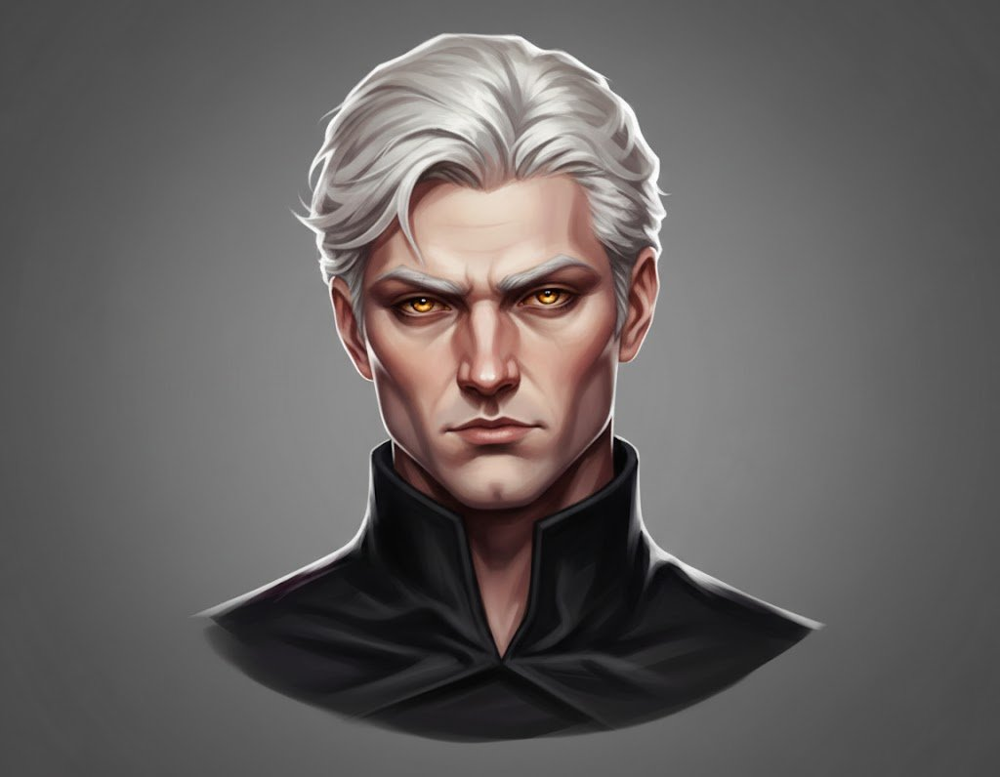
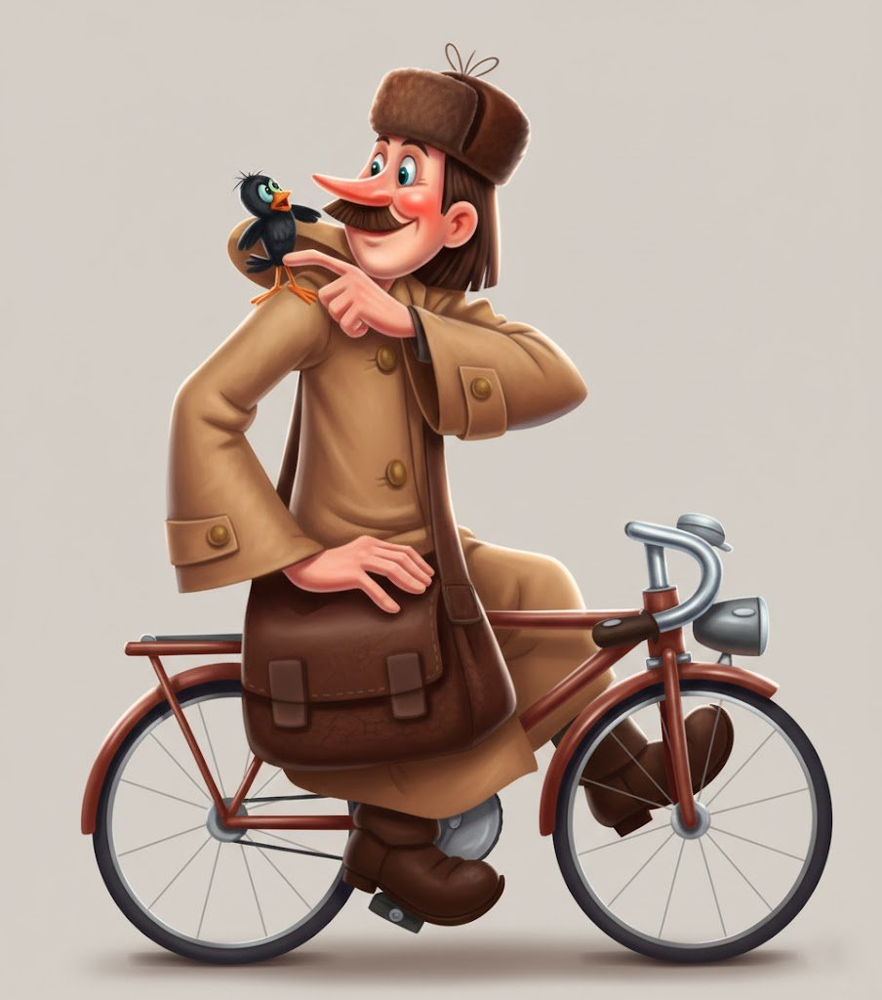
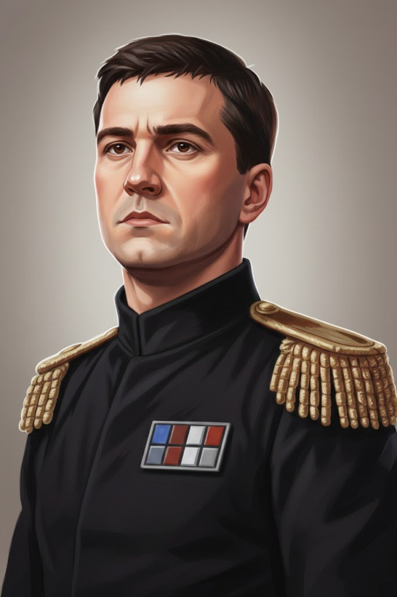
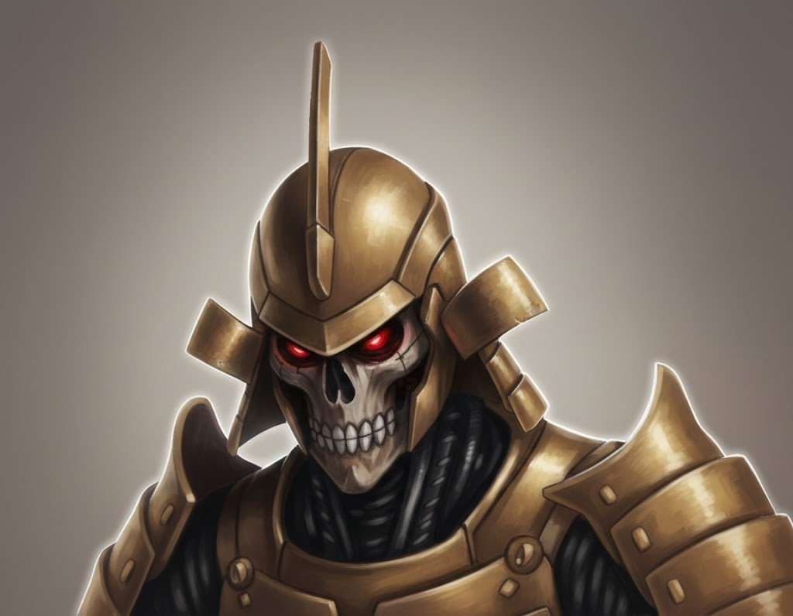

ПАНТЕОН ВЕТЕРАНОВ
Память о тех, кто ковал историю в пустоте космоса.
Создатели Классической Эры

Станя Победоносец
Эпоха участия: с 2016 года по н.в.

Вишенка на Торте
Эпоха участия: 2017 и 2025 годы
Ветераны «Новой Эры», «Теней Новой Эры» и «Ренессанса»

Илья Данилов
Эпоха участия: с 2013 по н.в.

Георгий Лебедь
Эпоха участия: с 2015 по н.в.

Андрей Литвинов
Эпоха участия: с 2015 по н.в.

Владислав Федоров
Эпоха: с 2015 по н.в.

Максимилиан Унгерн
Эпоха: с 2015 по н.в.
Артур Слободянюк
Эпоха: с 2015 по н.в.

Алексас Витаутас
Эпоха: Неизвестно
Синт Синя
Эпоха: Неизвестно
Егор Фадеев
Эпоха: с 2018 по н.в.
Безымянным героям
Мы выражаем глубочайшую благодарность всем игрокам, командирам и простым пилотам, чьи имена не вошли в этот реестр. Ваши действия, союзы и предательства формировали эту галактику. Вы — истинная суть «Новой Эры».